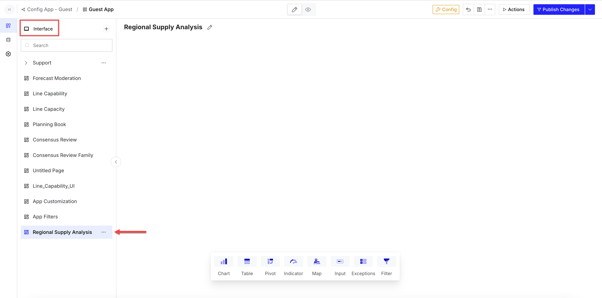
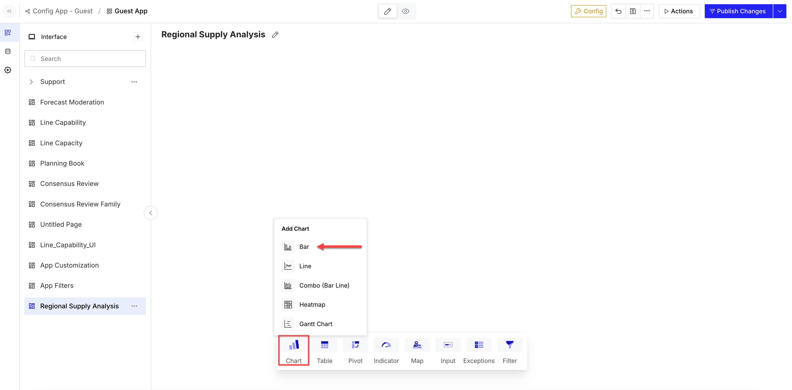
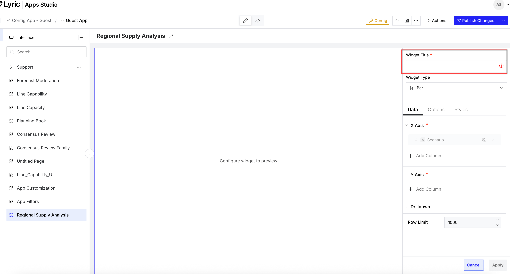
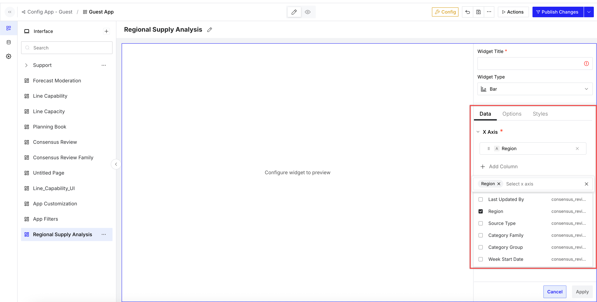
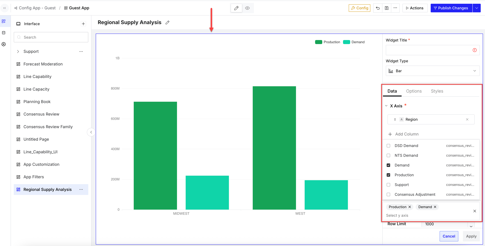
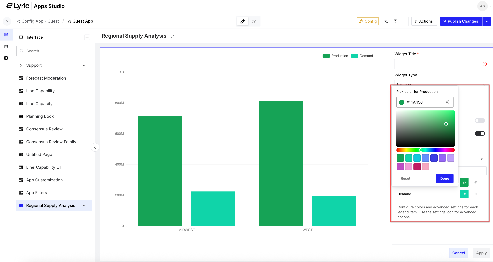
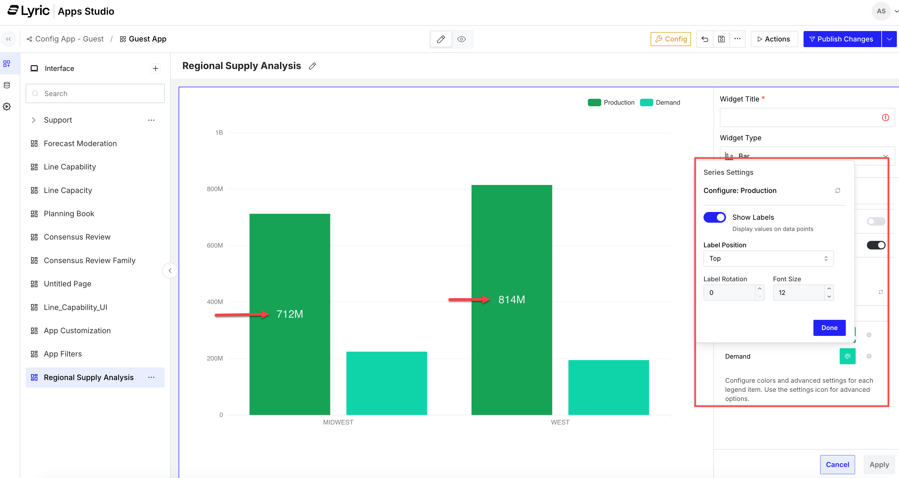
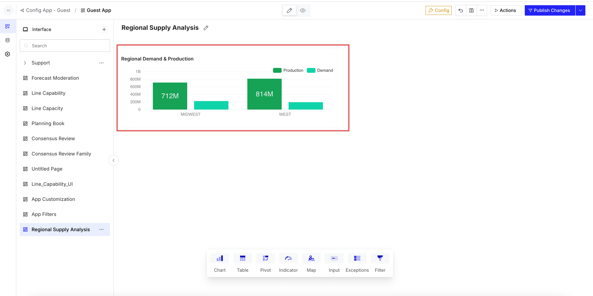

How to add bar chart
A bar chart shows values for different categories as rectangular bars. It helps you compare values across groups and quickly see differences in size. In Apps Studio, you can add a bar chart to an interface page and configure it by selecting fields for the X-axis and Y-axis. You can also adjust the chart title and style settings.
Open the required interface.
-
Open the required interface.

- Click Chart in the widget tray.
-
Select Bar in the Add Chart menu.

-
Enter a name for the chart in the Widget Title field in the
configuration panel displayed on the right side of the page.

-
Click on the Add Column drop-down menu from the X Axis menu under
the Data tab.

-
Select the required column to use as the category axis and repeat the same as
Step 5 to select the required columns from Y Axis menu.
Note: You can select more than one column for both axes.

After you add the X-axis and Y-axis fields, the chart preview updates. - Scroll to the bottom of the page and click on Customize Series drop-down menu.
-
Click on Pick Color for Production icon to customise the columns which is
indicated as the bar color.

In the example shown, separate colors are applied to Production and Demand. -
Click on the Series Settings icon to configure the label.

- Turn on the how Labels toggle button.
-
Click Apply to save the settings.
In the example shown, labels are displayed on the bars.
-
Review the bar chart details and then click Apply.
The bar chart is added to the Interface page.
